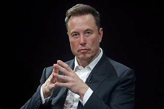

Elon Musk

About Me
Elon Reeve Musk FRS (born June 28, 1971) is a South African-born Canadian-American businessman. He moved to Canada and later became a U.S. citizen. He has been the Commissioner of the Department of Government Efficiency since 2025 during the second Donald Trump administration.[1] He became rich through several technology projects, including an online finance company which merged with PayPal in the year 2000.[2] Musk is the wealthiest person in the world, according to both the Bloomberg Billionaires Index and Forbes's real-time billionaires list.[3][4] In 2021, he was Time Person of the Year.[5]
On 20 January 2025, Trump, who just became President of the United States, made Musk the sole Administrator of DOGE.[1] That same day during an inauguration day rally, he performed a Nazi salute.[21] However, Musk later stated it was a Roman salute, which was also used by fascist dictator Benito Mussolini.[22]
Elon is the current CEO & Chief Product Architect of Tesla, Inc., a company that makes electric vehicles. He is also the CEO & CTO of SpaceX, an aerospace company. In 2022, he became the owner of the social media site Twitter which he later gave a new name known as X after buying it for USD $44 billion.[6]
In November 2024, U.S. President-elect Donald Trump said that Musk would become a leader of the Department of Government Efficiency (DOGE)[7] alongside Vivek Ramaswamy, but Ramaswamy stepped down before the Department was created.[8]
In 2022, Musk bought Twitter after complaining about Internet censorship and criticizing Twitter for suspending the Babylon Bee. During his first few weeks as CEO, he attracted criticism from some people. Many of them criticize him for laying off many employees at once, as well as appearing to have no interest in moderating hate speech.[19]
Hobbies and Interests
Elon Musk has many Hobbies:
- Reading
- Gaming
- Elon Musk is deeply involve in Design and Engineering